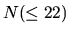

| The Vindictive Coach |
The coach of a football team, after suffering for years the adverse comments of the media about his tactics, decides to take his revenge by presenting his players in a line-up in such a way that the TV cameras would be compelled to zigzag in a ridiculous bobbing motion, by alternating taller and shorter players. However, the team captain objects that he must be the first of the line by protocolary reasons,and that he wants to be seen in the best possible light: that is, he should not have a taller colleague nest to him unless there is no alternative (everyone else is taller than him). Even in this case, the height difference should be as small as possible, while maintaining the zigzag arrangement of the line.
With this condition the coach addresses an expert in computation (i.e. you) to help him find the number of different alignments he may make, knowing that all players have a different height. They are always numbered by stature starting by 1 as the shortest one. Of course the number of players may be arbitrary, provided it does not exceed 22.
It is a set of lines, each of which contains two positive integers N and m separated by a blank space.  represents the number of players in the line-up and m the captain's number, who as told is always the first of the line.
For every line of the input a line with positive integer indicating the number of possible alignments under the above conditions.
3 1 3 3 4 1
1 1 1